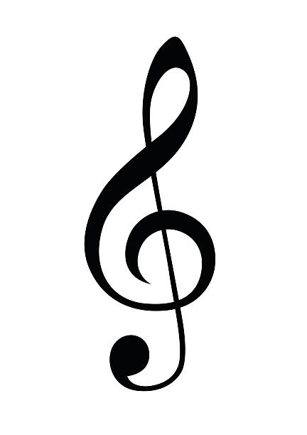

01 — INTRODUCTION
Tentang Saya
NAMA LENGKAP
Radit Setya Putra
UMUR
14 Tahun
TANGGAL LAHIR
15 April 2012
DOMISILI
Kabupaten Semarang
STATUS
Pelajar (SMP)
PENDIDIKAN
SMP NEGERI 2 JAMBU
02 — MY INTERESTS
Hal yang Saya Sukai
🎬
Editing
💻
Coding
🎮
Gaming
🌙
Lying Around
03 — MY MOTIVATION
Prinsip Hidup
“
Aku tidak harus menjadi hebat hari ini. Aku hanya perlu terus belajar, berani mencoba, dan menjadi lebih baik dari diriku yang kemarin.GROW AT YOUR OWN PACE
04 — MY PLAYLIST
Musik Favorit Saya

NOW PLAYING
Di Tepian Rindu
Davi Siumbing
Tekan play untuk mendengarkan